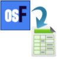

Other Plugins / Products
Books / Manuals
Accounting Made Simple - A hands-on tutorial to work with TurboCASH / osFinancials.
osFinancials Manual
|
osFinancials manual - Shop - Licence - Once-off - |
The osFinancials manual provides comprehensive guidance on using the osFinancials software, offering step-by-step instructions in Dutch. This manual covers various aspects, including setting up accounting processes, implementing daily tasks, and navigating the features of osFinancials. Whether you're new to the software or seeking to enhance your proficiency, the osFinancials manual equips users with the knowledge needed to effectively utilize the platform for financial management purposes.
Other plugins
Project Hours Registration Plugin
|
Project Hours Registration - Shop - Licence: Once-off - |
This plugin allows you to register hours for projects and generate quotes and/or invoices if you have activated Projects.
Efficiently track project hours and streamline invoicing with our Project Hours Registration Plugin. Available for a one-time license fee, this plugin seamlessly integrates with the Projects feature in osFinancials5, enhancing its functionality with multi-user agenda and hour registration capabilities.
Key Features:
- Hour Tracking: Easily register and monitor hours spent on various projects directly within the osFinancials5 interface.
- Quote and Invoice Generation: Generate quotes and invoices based on recorded project hours, facilitating accurate billing and client communication.
- Enhanced Projects Functionality: Complement the existing Projects feature in osFinancials5 with additional options for multi-user agenda management and hour registration.
- Improved Collaboration: Enable multiple users to collaborate on projects by tracking their respective hours and contributions.
- Streamlined Workflow: Simplify project management processes by centralizing hour registration and invoicing within the osFinancials5 platform.
Maximise productivity, improve project tracking, and enhance invoicing accuracy with the Project Hours Registration Plugin for osFinancials5.
Small adjustments
Quantities based on dates 1 and 2 plugin
|
|
Quantities based on dates 1 and 2 Plugin - Shop - Licence: Once-off - |

Quantities based on dates 1 and 2 plugin
Multiplies the item total amount based on the quantity and period between date field 1 and date field 2.
The "Quantities based on dates 1 and 2" plugin in osFinancials calculates quantities based on two dates and then multiplies the item total amount by the quantity and the period between those dates. This could be useful for scenarios like calculating expenses over a specific time period or determining the quantity of items needed for a project based on the duration.
This plugin would likely need inputs for the item total amount, the quantity, date field 1, and date field 2. Then, it would calculate the period between the two dates, multiply it by the quantity, and finally, multiply the result by the item total amount to give the final amount.
Netherlands text
"Aantallen op basis van datum 1 en 2
Vermenigvuldigd het artikel totaal bedrag op basis van het aantal en de periode tussen datum veld 1 en datumveld 2".
===
Unit Sales and Purchases Plugins
Unit Sales Plugin
|
Unit Sales Plugin - Shop - Licence: Once-off - |
The Unit Sales Plugin streamlines the process of selling units to your customers, such as packs of items. Easily manage unit quantities and sales within osFinancials with this intuitive plugin.
Key Features:
- Bulk Sales: Simplify the selling of items in predetermined units, such as packs or bundles, to customers.
- Unit Management: Add units and their quantities directly within osFinancials to facilitate sales of packaged items like 6-packs or other bundled units.
- Efficient Sales Process: Simplify the sales process by seamlessly integrating unit sales management into your osFinancials workflow.
- Improved Inventory Control: Maintain better control over inventory levels by accurately tracking unit quantities and sales transactions.
- Enhanced Customer Experience: Provide customers with the convenience of purchasing packaged units, improving satisfaction and loyalty.
With the Unit Sales Plugin, optimize your sales operations and offer customers the flexibility to purchase units tailored to their needs.
Unit Purchase Plugin
|
Unit Purchase Plugin - Shop - Licence: Once-off - |
The Unit Purchase Plugin facilitates the procurement of units from suppliers, streamlining processes such as bulk purchasing, package deals, or bundled acquisitions, akin to buying items in specific quantities such as six-packs. With this plugin, users can effortlessly manage unit-based purchases within osFinancials.
Key Features:
- Bulk Procurement: Simplify the procurement of items in predetermined units, such as packs or bundles, from suppliers.
- Quantity Management: Easily add units and specify their quantities within osFinancials, ensuring accurate inventory tracking and purchasing.
- Supplier Integration: Seamlessly integrate unit purchases with supplier transactions, enhancing procurement efficiency and supplier relationship management.
- Inventory Optimization: Streamline inventory management by aligning purchasing activities with predefined units, optimizing stock levels and reducing procurement complexities.
- Customization Options: Tailor the plugin settings to accommodate specific unit-based purchasing requirements, offering flexibility and adaptability to diverse procurement needs.
By leveraging the Unit Purchase Plugin, organizations can enhance their procurement processes, improve inventory management, and optimize purchasing efficiency within osFinancials.
Other apps
App at Google play - osFinancials simple POS scanner -
App at Google play - Chords and lyrics flow - For the music lovers
Error 404 Broken links
osF local webserver download now link - http://www.osf-boekhoudpakket-administratie.nl/index.php/nl/downloaden
http://www.osf-boekhoudpakket-administratie.nl/index.php/nl/downloaden Error 404
Broken links
https://www.osfinancials.org/en/webshop/debtor-creditor-control/pain/sepa-incasso-export Error 404
http://www.osf-boekhoudpakket-administratie.nl/index.php/en/webshop/best-sellers/bankimport-plug-in Error 404
Payroll plugin
|
Payroll - Manual - Shop - Licence : Once-off - Supported applications: Logisal, RoosRoos and Unit 4. |
Seamlessly import payroll data from supported applications like Logisal, RoosRoos, and Unit 4 directly into osFinancials, simplifying payroll-related transactions.
Is the program you use not listed? No problem! With our commitment to customer satisfaction, simply send us an export, and we will explore the possibility of adding that import. In most cases, the addition is free of charge.
Say goodbye to manual data entry and hello to efficiency as you effortlessly generate batches or journals for payroll processing within osFinancials.
Payroll Plugin Access - Batch entry - F9:Process - Payroll import option.
Multi-Language accounts plugin
|
|
Multi-Language accounts - Manual - Shop - Licence : Once-off - Documentation : Help documentation |

Break down language barriers in accounting with our Multi-Language Accounts plugin. Now, not only can you select different interface languages, but you can also seamlessly translate ledger and group names into multiple languages, ensuring clarity and ease of use for every user.
Each user can operate in their preferred language, facilitating efficient and accurate accounting practices. Plus, with the ability to view Sets of Books in various languages, collaboration across teams becomes smoother than ever. Whether it's English, Afrikaans, Dutch, or any other language, our plugin ensures that everyone can work comfortably and effectively within osFinancials. Say goodbye to language limitations and embrace global collaboration with Multi-Language Accounts plugin.
Workflow plugin
|
Workflow - Manual - Shop - Licence : Once-off - Workflow Bank Import Plugin - Shop - Licence: Once-off - Workflow Editor Plugin - Shop - Licence: Once-off - Documentation : Help documentation |
Unlock the power of streamlined task management with our Workflow plugin. Seamlessly record every step and process, whether it's inventory management, debtor/creditor tracking, or document handling, within osFinancials/TurboCASH. Visualize your workflow at a glance, gaining instant insights into each stage of progress.
Assign tasks or steps to specific users, track outstanding steps, and effortlessly manage transitions between stages. Our Workflow Plugin isn't just a tool - it's a knowledge system, empowering you to formalise and share business processes efficiently. Gain better control over your operations, with historical data readily available for informed decision-making. Say hello to optimized processes and enhanced productivity with the Workflow Plugin.
Workflow Bank Import Plugin
Workflow Bank Import Plugin - Shop - Licence : Once-off -
The Workflow Bank Import plugin provides users with a guided step-by-step process for importing downloaded bank transactions and posting them to the appropriate journal or batch. This streamlined workflow ensures efficiency and accuracy in handling bank transactions within osFinancials.
Workflow Editor Plugin
Workflow Editor Plugin - Shop - Licence : Once-off
Use workflow to create you own processes. With the Workflow Editor plugin, you can customize and create your own processes tailored to your specific needs. Whether it's automating tasks, managing approvals, or streamlining workflows, this tool empowers you to design efficient processes that align with your business requirements.
Branch Specific Plugins from our Webshop
Medical industry
Open Dental Plugin
|
Open Dental Plugin - Manual - Shop - Licence: Annual licence - |
The Open Dental Plugin offers seamless integration between your dental application and osFinancials. With just a click of a button, you can effortlessly import invoicing data from your dental application into osFinancials. Similarly, after receiving payments, you can conveniently close outstanding amounts in the dental application with another simple click. This plugin provides you with a comprehensive overview of outstanding amounts owed by your patients, ensuring efficient management of dental finances while minimizing manual tasks. Streamline your dental practice's financial workflow with the Open Dental plugin.
Promeetec Export Plugin
|
Promeetec Export Plugin - Shop - Licence : Annual subscriiption. Supported language: Netherlands. Once activated, you can access this pluging from the Plugins → External system links → Promeetec menu. |
Streamline your healthcare administration with our Promeetec Export Plugin, tailored specifically for Netherlands-based healthcare administration. Developed in collaboration with experts in healthcare administration, this plugin simplifies the selection of criteria, reconciliation, and exporting in Promeetec format, enabling easy claiming via email.
Key Features:
- Select open items based on criteria
- Reconcile selected items
- Export in Promeetec format
- Generate reports on processed batches
- Future development potential: Parsing return messages for detecting deviations.
Optimize your healthcare administration processes with our Promeetec Export Plugin, designed to meet the unique needs of Netherlands-based healthcare administration.
Woodsales / Volume Sales Plugin
|
|
Woodsales / Volume Sales Plugin - Manual - Shop - Licence : Once-off - |

Empower your wood wholesale trading with our Woodsales/Volume Sales Plugin. Tailored specifically for the timber industry, this plugin revolutionizes invoice processing by enabling you to specify measurements such as meters length, height, width, and cubic meters effortlessly.
With a simple one-time license, unlock the ability to manage wood sales with precision and efficiency. Say goodbye to manual calculations and hello to streamlined invoicing processes with the Woodsales/Volume Sales Plugin.
osFinancials PAB 2.0 Plugin
|
osFinancials PAB 2.0 Plugin - Shop - Licence: Annual subscription |
The osFinancials PAB 2.0 Plugin is a powerful addition to your osFinancials software, designed to enhance productivity and streamline your financial management processes. PAB stands for "Payment Authorization Bureau", and this plugin offers comprehensive features to facilitate secure and efficient payment authorisation workflows.
The Payment Authorization Bureau (PAB) plugin is designed to facilitate payment authorization workflows within osFinancials software. As such, its applicability is not limited to specific countries but rather extends to any organization or business entity that utilizes osFinancials for financial management purposes.
While osFinancials itself is a versatile accounting and financial management platform that can be used by organizations worldwide, the PAB plugin's effectiveness may vary depending on local regulations, banking systems, and business practices in different countries.
Therefore, the PAB plugin can be adapted and configured to meet the specific payment authorization requirements of various countries and regions, providing flexibility and customization options to accommodate diverse organizational needs. However, organizations should ensure compliance with relevant legal and regulatory frameworks governing payment authorization processes in their respective jurisdictions.
Key Features:
- Secure Payment Authorization: Ensure the security of your payment authorisation process with robust encryption and authentication mechanisms.
- Streamlined Workflow: Simplify and expedite payment authorisation workflows with intuitive tools and user-friendly interfaces.
- Multi-level Approval: Enable multi-level approval processes for payment authorisation, allowing for hierarchical review and authorisation by designated personnel.
- Audit Trail: Maintain a detailed audit trail of all payment authorization activities, including approvals, rejections, and modifications, for comprehensive record-keeping and compliance purposes.
- Integration Capabilities: Seamlessly integrate the PAB 2.0 Plugin with other osFinancials modules and external systems to streamline data exchange and enhance interoperability.
- Customizable Configuration: Tailor the configuration of the plugin to align with your organisation's specific payment authorization policies, rules, and requirements.
- Reporting and Analytics: Access insightful reports and analytics to gain visibility into payment authorisation trends, performance metrics, and compliance adherence.
- User Permissions: Assign granular user permissions to control access to sensitive payment authorisation functionalities and data, ensuring data security and compliance with regulatory requirements.
The osFinancials PAB 2.0 Plugin empowers your organisation with robust tools and capabilities to optimize payment authorisation processes, mitigate risks, and drive operational efficiency in your financial management operations.
Driving School Plugin
|
Driving School Plugin - Shop - Licence : |
Driving School Plugin This a comprehensive plugin for a driving school management system. This Plugin includes the FreeFieds Plugin and Multimedia Plugin.
Key Features:
- Multimedia Plugin for Candidate Photos: This feature allows candidates to capture their photos via webcam for identification purposes. It ensures that each candidate has a personalized photo associated with their profile.
- Multimedia Plugin for ID Scan: Candidates can scan or upload images of their identification documents, such as driver's licenses or IDs, to verify their identity and eligibility for the program.
- Multimedia Plugin for Theory Lists: Candidates can upload or scan documents related to their theoretical knowledge, such as study materials or test results. This helps instructors track each student's progress in theoretical learning.
- Free Fields for Importing CBR Files: This feature enables the import of CBR (Candidate Booking Request) files, allowing for easy integration of candidate data into the system. It streamlines the process of adding new candidates to the database.
- Integration with osF Agenda for Examination Dates: The plugin integrates with the osF agenda to schedule and manage examination dates for students. Instructors can easily view and update examination schedules within the driving school system.
- Integration with osF Agenda for Lesson Dates and Times: Similarly, the plugin integrates with the osFinancials agenda to schedule and manage lesson dates and times for students. Instructors can efficiently plan and track the progress of each student's driving lessons.
These features collectively enhance the functionality of the driving school management system, providing instructors with tools to efficiently manage candidate data, schedule appointments, and monitor student progress.
Accountancy plugins
Spreadsheet Plugin
|
 |
Spreadsheet Plugin - Shop - Licence : Once-off - |
The osFinancials Spreadsheet plugin is a powerful tool for integrating financial data directly into Excel spreadsheets, streamlining the process of analysing and reporting financial information. By enabling users to leverage functions ranging from simple totals to more complex SQL queries, it offers flexibility in how data is presented and analysed within the familiar Excel environment.
The ability to add multiple aliases for different Sets of Books and consolidate the results in Excel is particularly useful for organizations managing multiple accounting entities or subsidiaries.
The osFinancials Spreadsheet plugin is already included in osFinancials, eliminating the need for separate downloads. Upon payment, you'll receive an unlocking code via email for seamless activation.